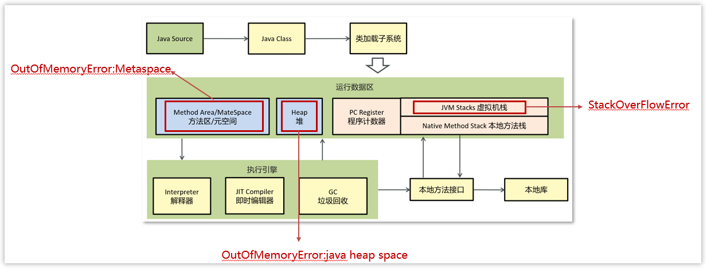
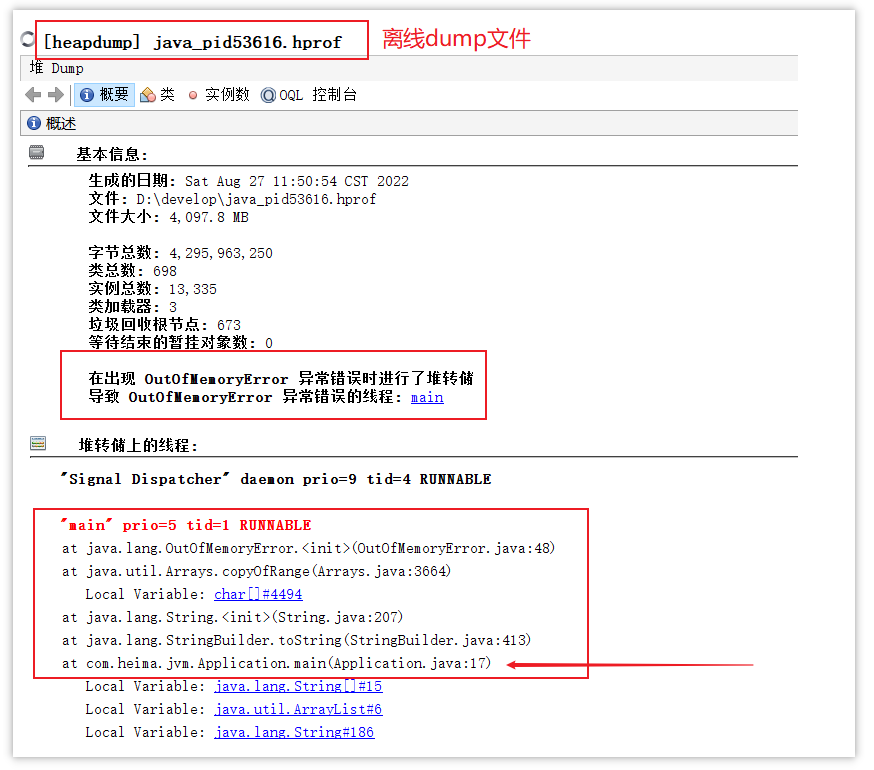
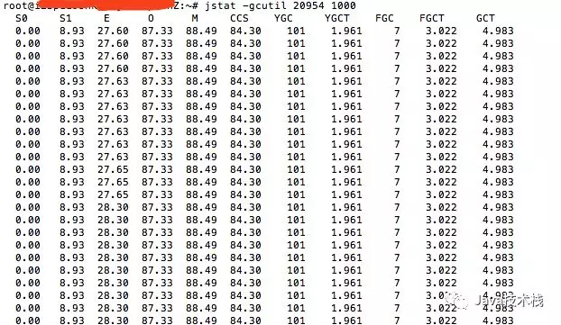
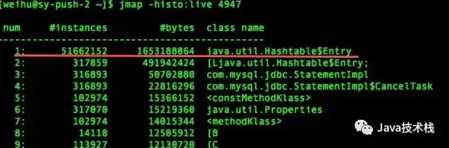

Java面试-常见场景题
1.CPU飙高如何定位问题？
1.使用 top 命令定位高 CPU 进程
2.查看当前线程中的进程信息
1 | ps H -eo pid,tid,%CPU | grep 40940 |
pid 进行id
tid 进程中的线程id
% cpu使用率
H 显示进程的所有线程（默认只显示进程，
H选项会展开线程-eo pid,tid,%CPU：自定义输出格式，仅显示以下字段
或者使用 top 命令定位线程
通过以下命令查看该进程下的线程及其 CPU 使用情况：
1 | top -H -p <PID> |
记录占用 CPU 最高的线程的 LWP 值（线程 ID）。
3.将线程id转换为16进制
1 | printf "%x\n" <LWP> |
4.使用 jstack 分析线程堆栈
使用以下命令获取堆栈信息并定位线程执行的代码：
1 | jstack <PID> | grep <线程十六进制ID> -A 20 |
<PID>：进程 ID。<线程十六进制ID>：十六进制的线程 ID。-A 20：显示匹配行之后的 20 行堆栈信息。
1.1补充内容
jstack 当前时刻的线程快照
jstat GC 分析
jmap （内存分析）综合诊断。
1.2CPU飙高的原因？
1.高并发请求：降级熔断，MQ
2.IO密集型：导致IO阻塞，大量线程切换消耗CPU
3.数据库慢查询：SQL查询未优化，导致查询线程长时间占用CPU
2.Java内存溢出排查思路？
原因：
如果线程请求分配的栈容量超过java虚拟机栈允许的最大容量的时候，java虚拟机将抛出一个StackOverFlowError异常
如果java虚拟机栈可以动态拓展，并且扩展的动作已经尝试过，但是目前无法申请到足够的内存去完成拓展，或者在建立新线程的时候没有足够的内存去创建对应的虚拟机栈，那java虚拟机将会抛出一个OutOfMemoryError异常
如果一次加载的类太多，元空间内存不足，则会报OutOfMemoryError: Metaspace

1、通过jmap指定打印他的内存快照 dump
有的情况是内存溢出之后程序则会直接中断，而jmap只能打印在运行中的程序，所以建议通过参数的方式的生成dump文件，配置如下：
-XX:+HeapDumpOnOutOfMemoryError
-XX:HeapDumpPath=/home/app/dumps/ 指定生成后文件的保存目录
2、通过工具， VisualVM去分析 dump文件
VisualVM可以加载离线的dump文件
3、通过查看堆信息的情况，可以大概定位内存溢出是哪行代码出了问题

3.内存泄漏如何观察到？
使用Java VisualVM，我们可以对Java Heap进行内存监视，并确定其行为是否存在内存泄漏。
VisualVM 可以具体定位内存泄漏的发生位置
第一步 使用visualVM的visualGC插件监控各内存分代
老年代持续增长，且 Full GC 无法回收，说明存在无法释放的对象。
或通过「监视器」页签观察「老年代内存」曲线。若内存使用量持续上涨且 Full GC 后不回落，说明存在无法回收的对象
第二步：分析gc是否正常执行
命令：意思是每1000毫秒查询一次，一直查。gcutil的意思是已使用空间站总空间的百分比。
1 | jstat -gcutil <pid> 1000 |

jstat执行结果
查询结果表明：这台服务器的新生代Eden区（E，表示Eden）使用了28.30%（最后）的空间，两个Survivor区（S0、S1，表示Survivor0、Survivor1）分别是0和8.93%，老年代（O，表示Old）使用了87.33%。程序运行以来共发生Minor GC（YGC，表示Young GC）101次，总耗时1.961秒，发生Full GC（FGC，表示Full GC）7次，Full GC总耗时3.022秒，总的耗时（GCT，表示GC Time）为4.983秒。
找出频繁FullGC的原因
1 | jmap -histo:live <pid> |
在网上找了一位博友的不正常数据，如下：

可以看出HashTable中的元素有5000多万，占用内存大约1.5G的样子。这肯定不正常。
第四步 堆转储分析（定位问题代码）
MAT 插件集成：导出堆转储后，用 MAT（Memory Analyzer Tool）进一步分析，生成泄漏报告（如「Leak Suspects」功能）
参考：
https://segmentfault.com/a/1190000039842866
https://cloud.tencent.com/developer/article/1495973
https://blog.csdn.net/DevelopmentStack/article/details/117385852